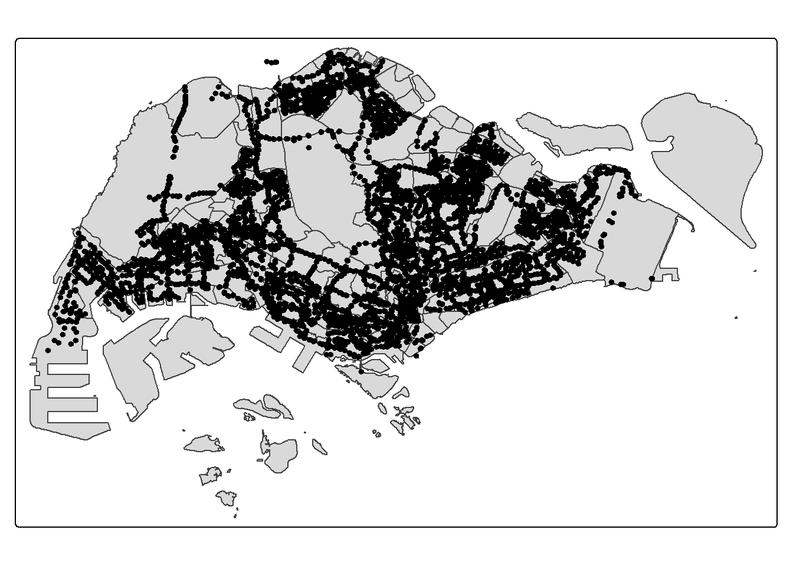
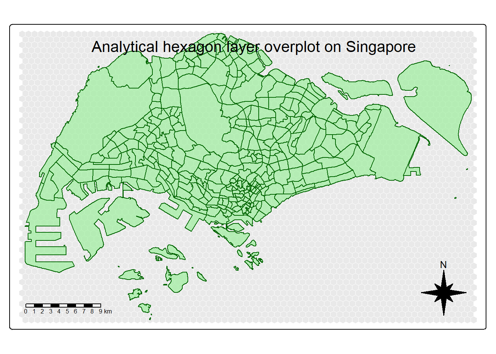
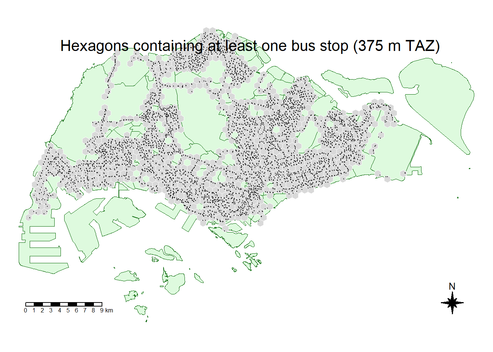

pacman::p_load(sf, sfdep, tidyverse, tmap, lubridate, readr, readxl, mapview,rvest, knitr)Take Home Exercise 2
1 Overview
Singapore’s bus network forms the backbone of daily urban mobility, linking residential, commercial, and industrial zones across the island. Traditional ridership mapping shows overall volumes but misses the localised spatial structure of passenger demand. This study applies Local Moran’s I and Emerging Hot Spot Analysis (EHSA) to uncover spatial and temporal clustering patterns in bus trips using LTA DataMall Passenger Volume by Origin–Destination data.
A 375 m hexagonal grid is used as traffic analysis zones (TAZ), and passenger trips are aggregated by origin for Weekday AM (6–9 a.m.), Weekday PM (5–8 p.m.), and Weekend/Holiday (11 a.m.–8 p.m.) periods. Local Moran’s I identifies significant hotspots and coldspots of passenger activity (p < 0.05), while EHSA combines Gi* with the Mann–Kendall test to detect evolving trends such as new, intensifying, or persistent hotspots. The results offer insights for bus service planning, demand management, and equitable transport accessibility across Singapore.
2 Getting Started
2.1 The Packages
2.2 The Packages
In this exercise, several R packages are used to support spatial data handling, statistical analysis, and geovisualisation.
| Package | Description |
|---|---|
| sf | Provides tools for importing, managing, and manipulating spatial (simple feature) objects. |
| sfdep | Extends sf to perform spatial dependency and spatial autocorrelation analyses, including Local Moran’s I and EHSA. |
| tidyverse | A collection of R packages for data wrangling, transformation, and visualisation (e.g., dplyr, ggplot2, readr, tidyr). |
| tmap | Produces high-quality static and interactive thematic maps for spatial analysis. |
| lubridate | Simplifies working with date and time variables for extracting time periods. |
| readr / readxl | Used for importing aspatial datasets such as bus passenger volumes. |
| mapview (optional) | Enables quick interactive map previews during data checking. |
We will load these packages using pacman::p_load() to streamline installation and loading:
2.3 The Data
This study integrates both aspatial (tabular) and geospatial datasets from public data sources to analyse bus passenger flows in Singapore.
| Dataset | Description | Format | Source |
|---|---|---|---|
| Passenger Volume by Origin–Destination (Bus Stops) | Monthly dataset recording the number of passenger trips between origin and destination bus stops. The PT_TYPE column is filtered for “BUS”, and the TIME_PER_HOUR field is used to extract weekday AM, PM, and weekend periods. |
CSV | LTA DataMall |
| Bus Stop Locations | Contains geolocation and metadata for all operational bus stops in Singapore, including stop codes, names, and coordinates (WGS84). | CSV | LTA DataMall |
| Master Plan 2019 Subzone Boundary (No Sea) | Provides subzone polygons representing Singapore’s urban planning regions, used for reference mapping and aggregation validation. | GeoJSON / Shapefile | data.gov.sg |
3 Importing data
3.1 BusStop Location data
The following code helps in importing Bus Stop Location shapefile downloaded from LTA DataMall into R environment.
BusStop = st_read(dsn = "data/geospatial/BusStopLocation_Aug2025",layer="BusStop") %>%
st_transform(crs = 3414)Reading layer `BusStop' from data source
`C:\govanzz\ISSS626_GEO_AUG_2025\Take_Home_Exercise\Take_Home_Ex02\data\geospatial\BusStopLocation_Aug2025'
using driver `ESRI Shapefile'
Simple feature collection with 5172 features and 2 fields
Geometry type: POINT
Dimension: XY
Bounding box: xmin: 3970.122 ymin: 26482.1 xmax: 48285.52 ymax: 52983.82
Projected CRS: SVY213.2 Loading Master Plan 2019 Subzone Boundary (No Sea)
The following code chunk helps us to import Master Plan 2019 Subzone Boundary (No Sea) from Singapore’s open data portal into R environment.
mpsz <- st_read("data/geospatial/MasterPlan2019SubzoneBoundaryNoSeaKML.kml")Reading layer `URA_MP19_SUBZONE_NO_SEA_PL' from data source
`C:\govanzz\ISSS626_GEO_AUG_2025\Take_Home_Exercise\Take_Home_Ex02\data\geospatial\MasterPlan2019SubzoneBoundaryNoSeaKML.kml'
using driver `KML'
Simple feature collection with 332 features and 2 fields
Geometry type: MULTIPOLYGON
Dimension: XY
Bounding box: xmin: 103.6057 ymin: 1.158699 xmax: 104.0885 ymax: 1.470775
Geodetic CRS: WGS 843.3 Loading the Passenger Volumn By origin Destination Bus Stops
The following code helps us importing Passenger Volume by Origin Destination Bus Stops downloaded from LTA DataMall into R environment.
odbus <- read_csv("data/aspatial/origin_destination_bus_202508.csv")4 Data Wrangling
4.1 MPSZ data
The code chunk below extracts attribute values that are embedded as HTML tables inside the KML’s Description field. Many government KML files store attributes in HTML form rather than as clean columns.
The function: - Parses the HTML text using read_html(). - Looks for rows where the (table header) equals the desired field name (e.g., “REGION_N”). - Extracts the correspondingcell value (the actual data). - Returns the text value or NA if not found.
This converts messy, nested HTML metadata into usable plain-text attributes.
extract_kml_field <- function(html_text, field_name) {
if (is.na(html_text) || html_text == "") return(NA_character_)
page <- read_html(html_text)
rows <- page %>% html_elements("tr")
value <- rows %>%
keep(~ html_text2(html_element(.x, "th")) == field_name) %>%
html_element("td") %>%
html_text2()
if (length(value) == 0) NA_character_ else value
}The code chunk below applies extract_kml_field() to each feature’s Description field to extract four important attributes: - REGION_N → Region name (e.g., “CENTRAL REGION”) - PLN_AREA_N → Planning area name (e.g., “TAMPINES”) - SUBZONE_N → Subzone name (e.g., “TAMPINES WEST”) - SUBZONE_C → Subzone code (short unique identifier) Each attribute is stored as a new text column in the mpsz data frame. The use of map_chr() ensures that the results are character vectors rather than lists.
mpsz <- mpsz %>%
mutate(
REGION_N = map_chr(Description, extract_kml_field, "REGION_N"),
PLN_AREA_N = map_chr(Description, extract_kml_field, "PLN_AREA_N"),
SUBZONE_N = map_chr(Description, extract_kml_field, "SUBZONE_N"),
SUBZONE_C = map_chr(Description, extract_kml_field, "SUBZONE_C")
) %>%
select(-Name, -Description) %>%
relocate(geometry, .after = last_col())mpszSimple feature collection with 332 features and 4 fields
Geometry type: MULTIPOLYGON
Dimension: XY
Bounding box: xmin: 103.6057 ymin: 1.158699 xmax: 104.0885 ymax: 1.470775
Geodetic CRS: WGS 84
First 10 features:
REGION_N PLN_AREA_N SUBZONE_N SUBZONE_C
1 CENTRAL REGION BUKIT MERAH DEPOT ROAD BMSZ12
2 CENTRAL REGION BUKIT MERAH BUKIT MERAH BMSZ02
3 CENTRAL REGION OUTRAM CHINATOWN OTSZ03
4 CENTRAL REGION DOWNTOWN CORE PHILLIP DTSZ04
5 CENTRAL REGION DOWNTOWN CORE RAFFLES PLACE DTSZ05
6 CENTRAL REGION OUTRAM CHINA SQUARE OTSZ04
7 CENTRAL REGION BUKIT MERAH TIONG BAHRU BMSZ10
8 CENTRAL REGION DOWNTOWN CORE BAYFRONT SUBZONE DTSZ12
9 CENTRAL REGION BUKIT MERAH TIONG BAHRU STATION BMSZ04
10 CENTRAL REGION DOWNTOWN CORE CLIFFORD PIER DTSZ06
geometry
1 MULTIPOLYGON (((103.8145 1....
2 MULTIPOLYGON (((103.8221 1....
3 MULTIPOLYGON (((103.8438 1....
4 MULTIPOLYGON (((103.8496 1....
5 MULTIPOLYGON (((103.8525 1....
6 MULTIPOLYGON (((103.8486 1....
7 MULTIPOLYGON (((103.8311 1....
8 MULTIPOLYGON (((103.8589 1....
9 MULTIPOLYGON (((103.8283 1....
10 MULTIPOLYGON (((103.8552 1....Transforming into CRS 3414
mpsz <- st_transform(mpsz,
crs = 3414)
mpszSimple feature collection with 332 features and 4 fields
Geometry type: MULTIPOLYGON
Dimension: XY
Bounding box: xmin: 2667.538 ymin: 15748.72 xmax: 56396.44 ymax: 50256.33
Projected CRS: SVY21 / Singapore TM
First 10 features:
REGION_N PLN_AREA_N SUBZONE_N SUBZONE_C
1 CENTRAL REGION BUKIT MERAH DEPOT ROAD BMSZ12
2 CENTRAL REGION BUKIT MERAH BUKIT MERAH BMSZ02
3 CENTRAL REGION OUTRAM CHINATOWN OTSZ03
4 CENTRAL REGION DOWNTOWN CORE PHILLIP DTSZ04
5 CENTRAL REGION DOWNTOWN CORE RAFFLES PLACE DTSZ05
6 CENTRAL REGION OUTRAM CHINA SQUARE OTSZ04
7 CENTRAL REGION BUKIT MERAH TIONG BAHRU BMSZ10
8 CENTRAL REGION DOWNTOWN CORE BAYFRONT SUBZONE DTSZ12
9 CENTRAL REGION BUKIT MERAH TIONG BAHRU STATION BMSZ04
10 CENTRAL REGION DOWNTOWN CORE CLIFFORD PIER DTSZ06
geometry
1 MULTIPOLYGON (((25910.34 29...
2 MULTIPOLYGON (((26750.09 29...
3 MULTIPOLYGON (((29161.2 297...
4 MULTIPOLYGON (((29814.11 29...
5 MULTIPOLYGON (((30137.77 29...
6 MULTIPOLYGON (((29699.44 29...
7 MULTIPOLYGON (((27748.04 29...
8 MULTIPOLYGON (((30844.87 29...
9 MULTIPOLYGON (((27444.04 29...
10 MULTIPOLYGON (((30436.73 29...4.2 BusStop data
In the code chunk below plots polygon boundaries from the mpsz shapefile (e.g., planning subzones) and overlays bus stop point locations from the BusStop dataset as dots. This creates a map showing where bus stops are situated within each subzone.
tm_shape(mpsz) + tm_polygons() + tm_shape(BusStop) + tm_dots()
From the code we can see that some bus stops are outside Singapore due to some routues that start from singpoare but continue into Johor Bharu.
4.2.1 Extracting Bus Stops located within Singapore
In the code chunk below, st_join() of sf package is used to select all bus stops located within Singapore main island.
BusStop_in_SG <- st_join(
BusStop, mpsz,
join = st_within,
left = FALSE)
tm_shape(mpsz)+ tm_polygons()+ tm_shape(BusStop_in_SG)+ tm_dots()
We can find that all bus stops are within Singapore
4.3 Derving Analytical Hexagon
Hexagons reduce sampling bias due to edge effects of the grid shape, this is related to the low perimeter-to-area ratio of the shape of the hexagon. A circle has the lowest ratio but cannot tessellate to form a continuous grid. Hexagons are the most circular-shaped polygon that can tessellate to form an evenly spaced grid.
In the code chunk below, st_make_grid() of sf package is used to create the hexagon data set.
hexagon <- st_make_grid(mpsz,
cellsize = 750,
what = "polygon",
square = FALSE
) %>%
st_sf()tmap_mode("plot")
tm_shape(hexagon) +
tm_polygons(col = "lightgrey", border.col = "white", lwd = 0.5, alpha = 0.5) +
tm_shape(mpsz) +
tm_polygons(col = "lightgreen", border.col = "darkgreen", alpha = 0.6) +
tm_layout(
title = "Analytical hexagon layer overplot on Singapore",
frame = TRUE,
legend.outside = FALSE,
title.position = c("center", "top")
) +
tm_compass(type = "8star", position = c("right", "bottom")) +
tm_scale_bar(position = c("left", "bottom"))
Now we only want to select hexagons with bus stops
The code chunk below eliminates hexagons without bus stops from the initial hexagon layer.
It consists of three steps:
- A new field called
busstop_countis created.
st_intersects()is used to flag bus stops located inside each hexagon. Then,length()is used to count the number of bus stops within each hexagon.
- Lastly,
filter()is used to select hexagons with at least one bus stop found.
hexagon$busstop_count =
lengths(st_intersects(
hexagon, BusStop_in_SG))
hexagon <- filter(
hexagon, busstop_count > 0)tmap_mode("plot")
tm_shape(mpsz) +
tm_polygons(col = "lightgreen", alpha = 0.3, border.col = "darkgreen", lwd = 0.5) +
tm_shape(hexagon) +
tm_polygons(col = "grey85", border.col = "white", lwd = 0.2) +
tm_shape(BusStop_in_SG) +
tm_dots(size = 0.02, col = "black", alpha = 0.7) +
tm_layout(
title = "Hexagons containing at least one bus stop (375 m TAZ)",
frame = FALSE,
legend.show = FALSE,
bg.color = "white",
title.position = c("center", "top")
) +
tm_scale_bar(position = c("left", "bottom")) +
tm_compass(type = "8star", position = c("right", "bottom"), size = 2)
4.3.1 Assigning Id to each hexagon
In the code chunk below select() is used to drop busstop_count field from the sf data frame. A new feld called HEX_ID is created. Then, sprintf(), seq_len() and nrow() are used to insert sequential ID values with a character H in front. as.factor() is used to convert the values into factor data type.
hexagon <- hexagon %>%
select(, -busstop_count)
hexagon$HEX_ID <- sprintf(
"H%04d", seq_len(
nrow(hexagon))) %>%
as.factor()4.4 Preparing Trip generation Data
The code chunk below prepares and cleans the bus trip data for further analysis:
- The dataset
odbusis piped into a sequence of data transformations.
select()keeps only the relevant columns:ORIGIN_PT_CODE,DAY_TYPE,TIME_PER_HOUR, andTOTAL_TRIPS.
- The
rename()functions are used to give the columns more meaningful names:ORIGIN_PT_CODE→BUS_STOP_N
TIME_PER_HOUR→HOUR_OF_DAY
TOTAL_TRIPS→TRIPS
- The column
BUS_STOP_Nis then converted into a factor variable usingas.factor(), indicating that bus stop codes are categorical data.
trips <- odbus %>%
select(c(ORIGIN_PT_CODE, DAY_TYPE, TIME_PER_HOUR, TOTAL_TRIPS)) %>%
rename(BUS_STOP_N = ORIGIN_PT_CODE) %>%
rename(HOUR_OF_DAY = TIME_PER_HOUR) %>%
rename(TRIPS = TOTAL_TRIPS)
trips$BUS_STOP_N <- as.factor(trips$BUS_STOP_N)4.4.1 Populating Hexagon IDs into BusStop data frame
Before we can aggregate trips generate at bus stops onto hexagon level, we need to populate the hexagon ids in hexagon data frame into BusStop data frame.
The code chunk below identifies which bus stops fall inside each hexagon and creates a simplified table:
st_intersection(BusStop, hexagon)performs a spatial intersection to find the bus stops located within each hexagon.
st_drop_geometry()removes the spatial geometry, keeping only the attribute data.
select(c(BUS_STOP_N, HEX_ID))keeps only two columns — the bus stop ID (BUS_STOP_N) and the corresponding hexagon ID (HEX_ID), linking each bus stop to its hexagon.
bs_hex <- st_intersection(
BusStop, hexagon) %>%
st_drop_geometry() %>%
select(c(BUS_STOP_N, HEX_ID))4.4.2 Adding HEX_ID into bus trips data
To derive the hourly number of bus trips per hexagon, we need to add HEX_ID to trips data. By doing so, we will be able to aswer location questions such as how many bus trip originate from a certain hexagon?
In the code chunk below inner_join() is used to join the trips data with bs_hex.
trips <- inner_join(trips, bs_hex)4.4.3 Aggregating TRIPS based on HEX_ID
In the code chunk below, group_by() and summarise() is used to aggregate TRIPS by HEX_ID, DAY_TYPE and HOUR_OF_DAY.
trips <- trips %>%
group_by(
HEX_ID,
DAY_TYPE,
HOUR_OF_DAY) %>%
summarise(TRIPS = sum(TRIPS))